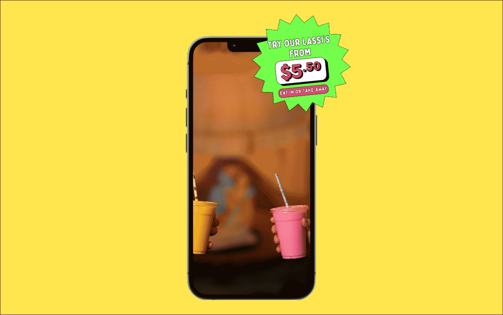

<div id="carouselExampleFade2" class="carousel slide carousel-fade">
  <div class="carousel-inner">
    <div class="carousel-item active">
      
    </div>
    <div class="carousel-item ">
      
    </div>
    <div class="carousel-item  ">
      
    </div>


    <!-- Añadir más elementos del carrusel aquí -->
  </div>
  <button class="carousel-control-prev" type="button" data-bs-target="#carouselExampleFade2" data-bs-slide="prev">
    <span class="carousel-control-prev-icon" aria-hidden="true"></span>
    <span class="visually-hidden">Previous</span>
  </button>
  <button class="carousel-control-next" type="button" data-bs-target="#carouselExampleFade2" data-bs-slide="next">
    <span class="carousel-control-next-icon" aria-hidden="true"></span>
    <span class="visually-hidden">Next</span>
  </button>
</div>
